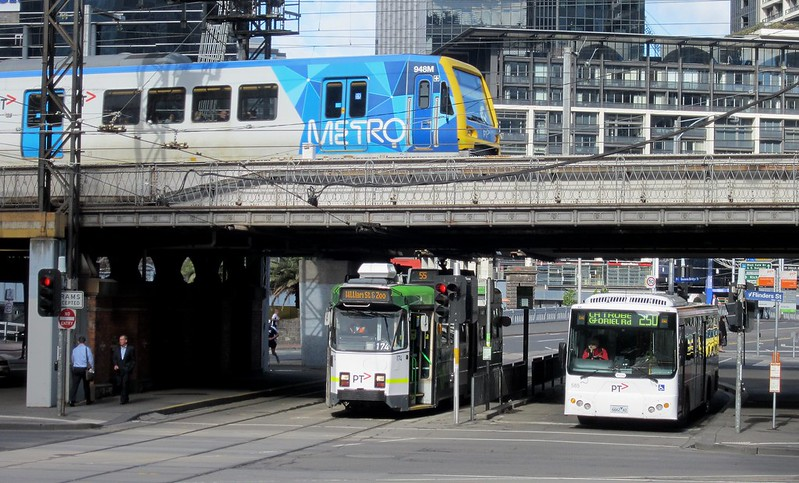
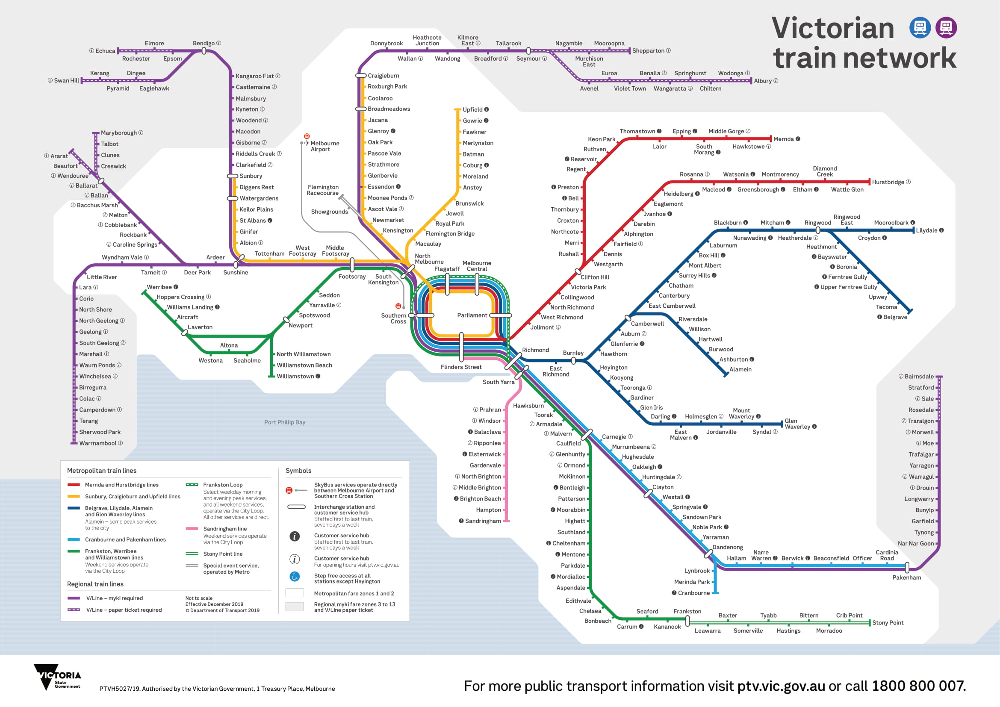

Many people of all ages in Victoria rely on public transportation to get around the state and, most importantly, to go to work. Victorian public transport is clearly a huge part of the average person’s life. With that many people using transport, there is a need for improved transport infrastructure. The tough part is figuring out how to develop more buses, trams, and other vehicles sustainably. According to the Australian Energy Update 2023 by the Department of Climate Change, there has already been multiple efforts to make public transport more sustainable. For example, you’ll find that most trams are solar powered, and trains are powered by electricity, both of which are renewable energy. This is true, but despite their claims, it isn’t as sustainable as it sounds. You see, the electrical energy indeed is renewable, but its source isn’t. The electricity is created via solar panels, which usually on its own would be a good sustainable solution. However, since they are taking up a lot of land, and are placed in mass amounts, they are actually bad for the environment.
To create truly sustainable infrastructure, we must accelerate the transition to renewables, ensuring that this shift does not come at the expense of the environment. This means that the energy used in building and operating infrastructure, such as trams and other transportation systems, must be sourced from clean renewables like solar. In addition, the materials used in construction must be chosen carefully to avoid waste and harm to natural resources, while also meeting safety standards to ensure the wellbeing of the public. To drive these changes, the Victorian Government has set ambitious targets to significantly reduce emissions by 2050, prioritizing the adoption of renewable energy across various sectors, including transportation.